Reformas
con carácter.
En Tacto ejecutamos reformas integrales, baños, cocinas, microcemento, iluminación y domótica. Equipo propio, precio cerrado desde el día uno.
- Visita técnica gratuita a domicilio
- Presupuesto cerrado, sin costes ocultos
- Sin subcontratas — todo nuestro equipo
- Reformas de pisos, casas y locales comerciales
Tu reforma en 4 pasos
Un proceso claro y transparente desde el primer contacto hasta la entrega de llaves, sin sorpresas ni intermediarios.
-
01
Cuéntanos tu proyecto
Rellena el formulario o llámanos. Explícanos qué quieres reformar, la superficie y tus ideas. En 24 horas te confirmamos disponibilidad.
-
02
Visita técnica
Un técnico de Tacto acude al espacio, toma medidas y evalúa el estado real de la obra. La visita es completamente gratuita y sin compromiso.
-
03
Presupuesto detallado
Recibes un presupuesto cerrado con todas las partidas desglosadas: materiales, mano de obra y plazos. Sin letra pequeña. Tú decides si sigues adelante.
-
04
Empieza la obra
Nuestro equipo arranca en la fecha acordada. Te informamos en cada fase y gestionamos incidencias el mismo día. Entrega limpia y puntual.
Microcemento
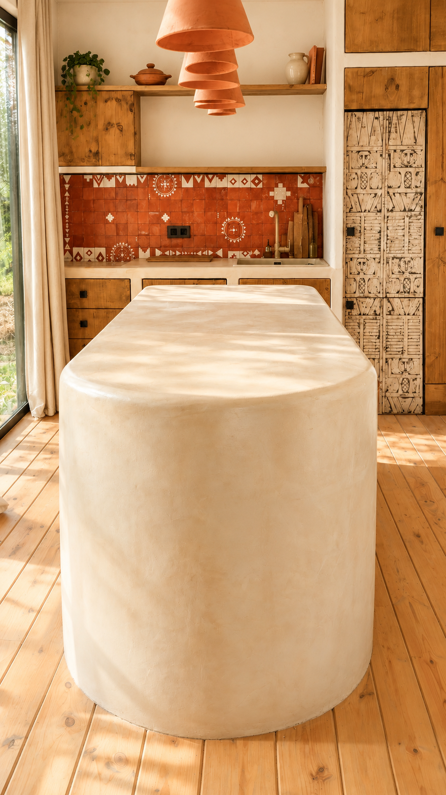
La materia
en su
estado puro
Un espacio diseñado en torno al microcemento: encimera, isla monolítica, lavabo. Cada superficie pulida a mano, cada redondeo tallado para responder a la luz.
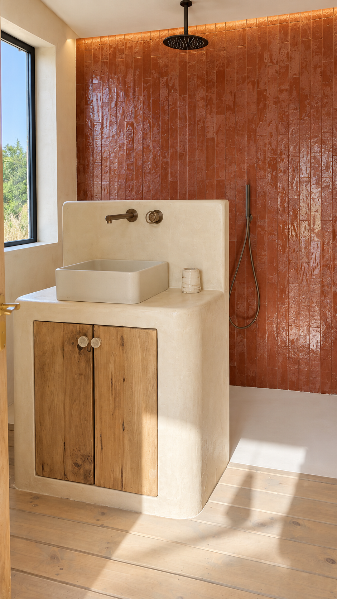
Lavabo y mueble de baño —
microcemento crema, grifería bronce
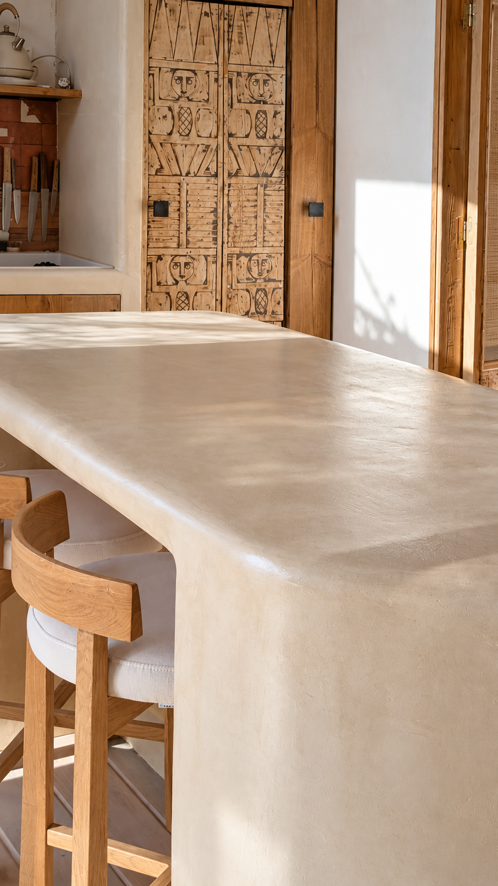
Encimera de bar — luz dorada,
superficie pulida mate/satinado
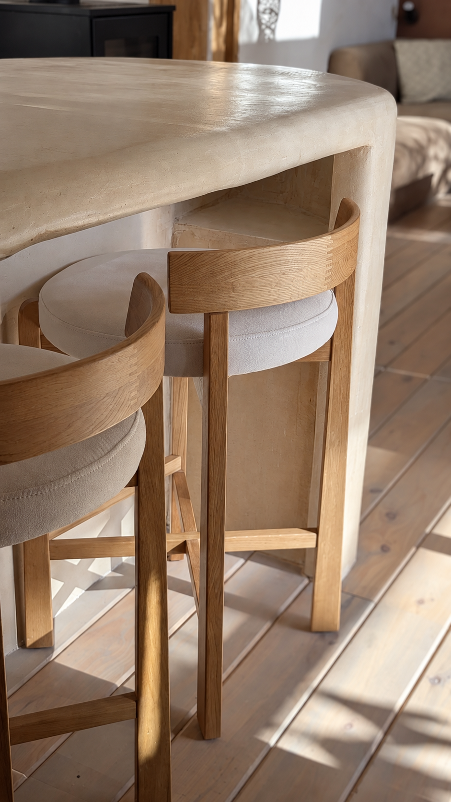
Mesa redonda — redondeo en microcemento,
taburetes de roble natural
Una superficie que vive con la luz.
Baños y Cocinas
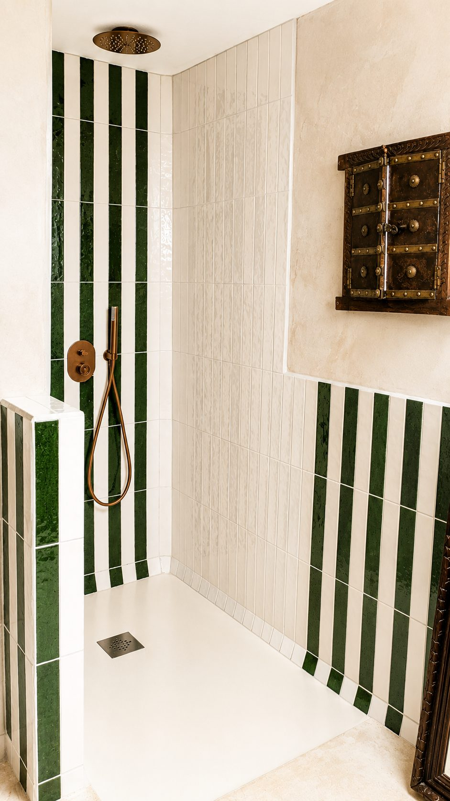
Rayures vert forêt / blanc — carreaux artisanaux,
robinetterie cuivre, porte ancienne à clous laiton
Reforma de baño integral y a medida
Transformamos baños completos llave en mano: demolición, fontanería, impermeabilización y acabado final. Especializados en duchas italianas a ras de suelo, microcemento continuo y revestimientos cerámicos de alta calidad. Sin subcontratas, con precio cerrado desde el primer día.
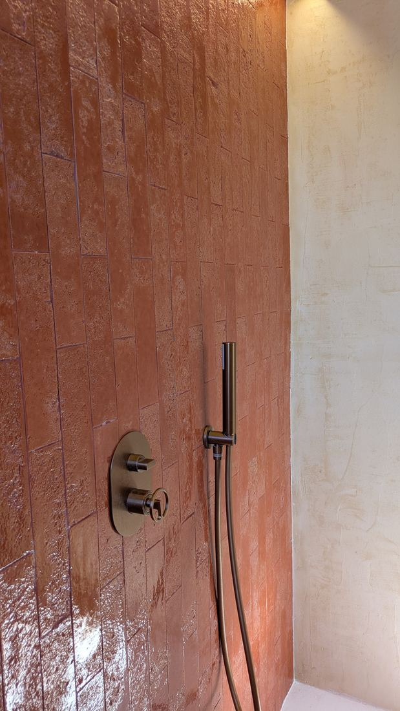
Terracota y tadelakt — contraste de textura,
grifería dorada envejecida
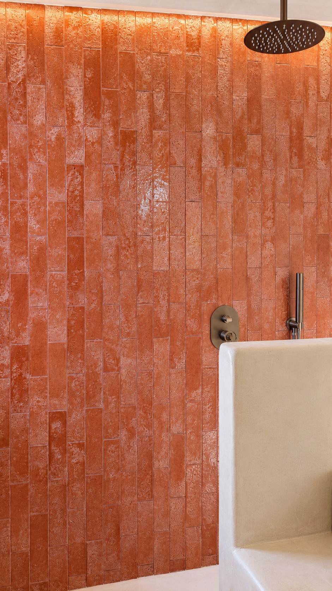
Pared terracota a toda altura —
alcachofa lluvia, bañera en microcemento
Una reforma de baño bien ejecutada transforma el uso diario del espacio: más confort, mayor eficiencia hídrica y un aumento real del valor del inmueble. En Tacto diseñamos cada baño desde cero — duchas a ras de suelo, mamparas a medida, muebles de obra y acabados continuos en microcemento — con plazos cumplidos y sin obras interminables.
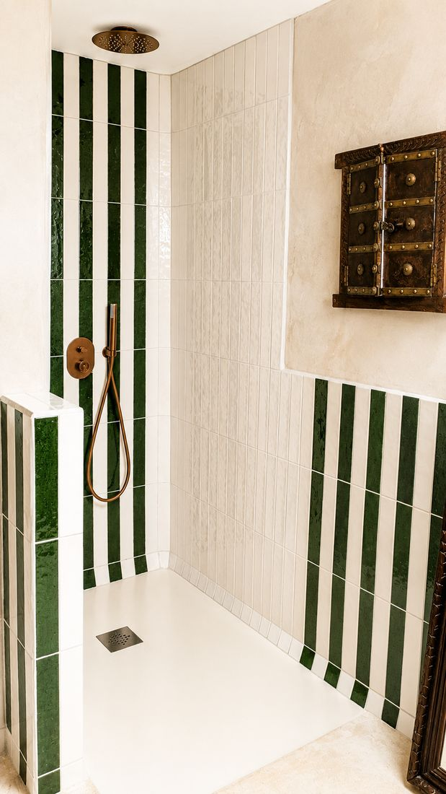
Vista general — grifería bronce,
plato de ducha en microcemento integrado
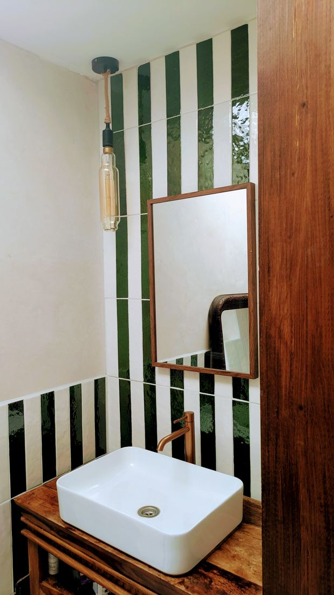
Lavabo sobre encimera, mueble madera maciza,
espejo de madera y bombilla Edison
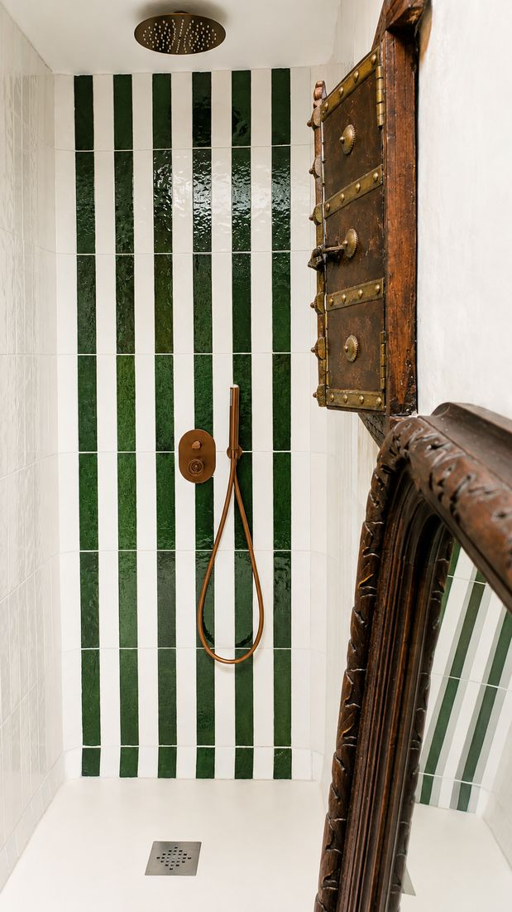
Ducha frontal — plato extra plano,
marco tallado al fondo
Carpintería
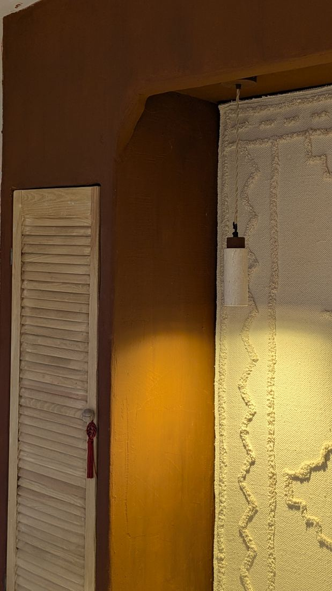
Madera maciza & materiales nobles
La madera como
hilo conductor
Mueble lavabo en madera maciza, espejo de marco en madera, celosías y paneles a medida — la carpintería estructura el espacio sin sobreargarlo. Cada pieza está pensada para dialogar con los azulejos, el revoco y el metal.
Chalet — Reforma integral
Rehabilitación completa de un chalet de madera: cocina abierta con muebles lacados en negro y encimera de pizarra, iluminación LED y lámparas colgantes artesanales, suelos de pino macizo restaurados. Carpintería, iluminación y acabados coordinados en un mismo proyecto.

Arco de obra, persiana de madera a medida —
cortina de lino tejido, acabado revoco pigmentado
Exteriores & Piscinas
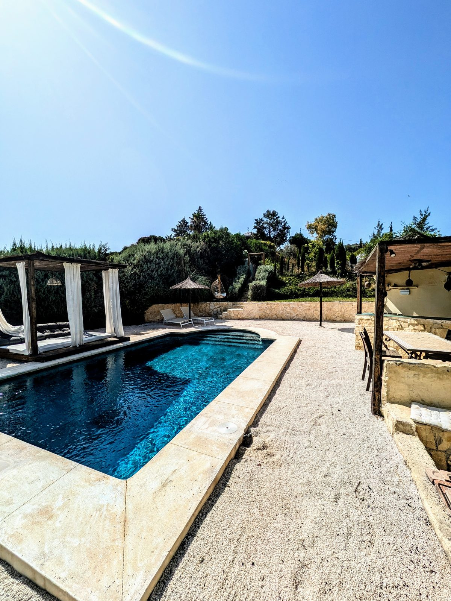
Piscinas y exteriores con acabado total
Reformamos piscinas, renovamos revestimientos e instalamos sistemas de tratamiento de agua con sal — más suave, más económico que el cloro — y diseñamos terrazas, porches y jardines que prolongan el interior con coherencia visual.
De cloro a sal, y mucho más
Una de las mejoras más demandadas es la conversión de cloro a sal: instalamos el clorador salino, ajustamos la filtración y revisamos la electrónica. Agua sin irritaciones, sin olor y mantenimiento mucho más económico. Compatible con cualquier piscina existente.
Para renovaciones diseñamos el revestimiento completo — gresite, microcemento, azulejo artesanal o piedra — con iluminación LED subacuática y depuradora integrada. Terrazas y porches en los mismos materiales que el interior, sin fisuras.
- Conversión de cloro a sal — clorador salino e instalación completa
- Reforma de vasos y renovación de revestimiento
- Piscinas desbordantes, de skimmer o naturales
- Terrazas en piedra natural, barro o microcemento exterior
- Porches y pérgolas con madera tratada
- Iluminación LED exterior e iluminación subacuática
- Proyecto integral llave en mano, con precio cerrado
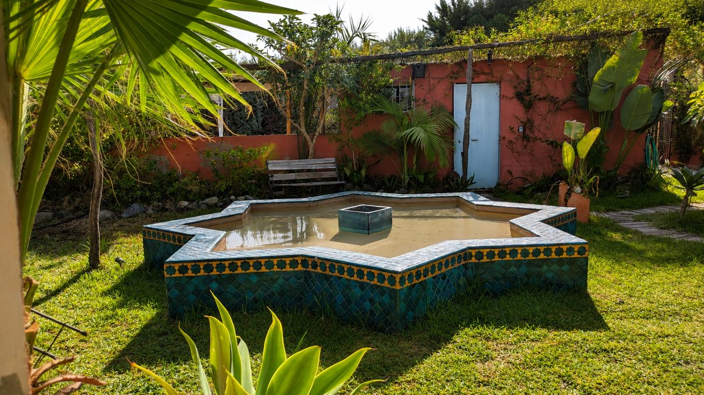